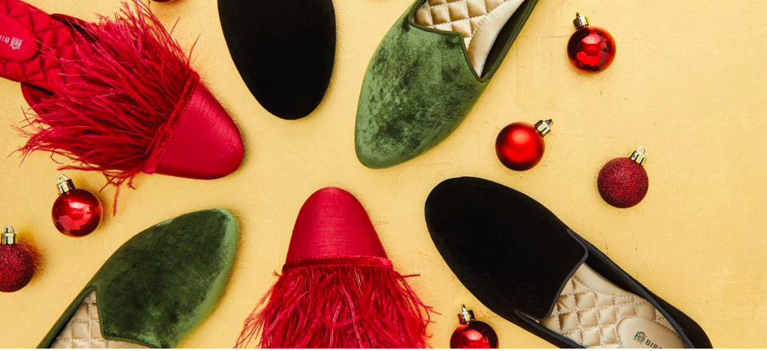

The Founders
We are two busy moms who share a passion for bringing family and friends together at home. Frustrated after years of hosting barefoot or in frumpy slippers, we decided to solve the problem. We originally designed Birdies as a comfortable and stylish slipper for home entertaining. But then a funny thing happened. You decided Birdies were just too good to keep inside and wore them everywhere.
Her Product, Birdies
Birdies invented a new category of footwear merging luxurious style and ultimate comfort with our exclusive 7-layer cushion technology. By combining the support of a sneaker, the softness of a slipper and the style of a designer flat, we created the most versatile shoe in the world. Who wouldn’t want that?
The Brand's motto
We are a brand born of women, dedicated to serving women. We share your dreams. We share your challenges. We share your values. It is the heart, soul, passion and purpose that drives us. Always.